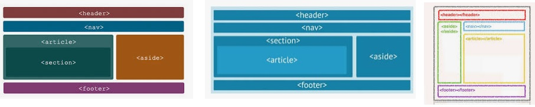

El propósito mas importante es acercar a los estudiantes a los principales temas relacionados con el diseño de sitios WEB
haciendo que se interesen, se motiven y se animen al uso de estas tecnologías, que sin querer, y por temas ajenos
a la voluntad de las instituciones, se ha visto necesario utilizar.
Los recursos OVA que se comparten en este sitio WEB, están pensados para desarrollar temáticas que en realidad
orienten al estudiante, y le ayuden a despertar la curiosidad y la creatividad en este tipo de herramientas. Se espera
que al menos el 80% de los estudiantes continúen con las clases, y con el deseo de adquirir conocimiento, llegando a un
gran porcentaje de estudiantes que no suman a la deserción estudiantil.
Uno de los temas mas interesantes de lo que se encontrará son el manejo de ETIQUETAS SEMÁNTICAS, LISTAS Y ENLACES.
ETIQUETAS SEMÁNTICAS:
Son etiquetas que nos ayudan a ilustrar el significado del contenido que traen consigo. Permiten una mejor indexación
de las páginas web y a que podamos definir dentro de ella una mejor estructura.
LISTAS:
Estas como tal nos permiten crear un conjunto de elementos con una estructura o forma de lista dentro de una página web
que en la lista, generalmente deben o aparecen predecedidos de un guión o un número. Estas se clasifican como listas
ordenadas, listas desordenadas y listas de definiciones.
Listas ordenadas:
No muestran los elementos de la lista en orden. Y los presenta de manera numerada, mostrando cada elemento
predecedido de un número o letra. Esta LISTA en html se representan con el elemente ol y para cada elemento
ordenado tomará el elemento li.
Listas desordenadas:
Permiten mostrar los elementos sin ningún tipo de orden, simplemente se predeceden por una viñeta, podrá ser un
punto o un cuadro. Esta LISTA en html se representan con el elemente ul y para cada elemento
ordenado tomará el elemento li.
Lista de definiciones:
Nos sirven para montar listas de las cuales tenemos estructura, valor y definición. Generalmente son listas
para definir alguna terminología similar a la de un diccionario. Estas LISTAS se definen con el elemento dl y
para representar la definición el elemento dd.
CONTENIDO PROGRAMÁTICO

Tomado de:
Gauchat, J. D. (2012). El gran libro de HTML5, CSS3 y Javascript. Marcombo.
Tinoco, E. E. C., & Solís, I. S. (2014). Programación web con CSS, JavaScript, PHP y AJAX. Iván Soria Solís.
Herreros Lucas, J. L. (2011). Implementación de un generador de contenido web semántico con posiciones didácticas de ajedrez.
Cué, J. L. G., Rincón, J. A. S., & García, C. M. A. (2008). Identificación del uso de la tecnología computacional de profesores y alumnos de acuerdo
a sus estilos de aprendizaje. Revista de Estilos de Aprendizaje, 1(1).
Abanto Zapata, J. M. (2019). Los tributos y su impacto en los resultados de gestión de las micro y pequeñas empresas del
sector comercio–rubro Librerías, de la provincia de Sechura en el año 2017
Lugo, N. V., & Vega, B. H. (2013). Manejo del departamento de botones. Boletín Científico de las Ciencias Económico Administrativas del ICEA, 2(3).